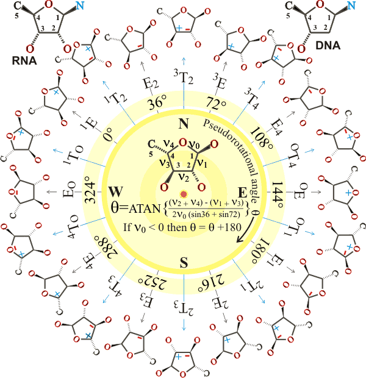

The example furan above is α-L-arabinofuranose; D-ribose and D-deoxyribose are shown top left and right, respectively. The angles v0, v1, v2, v3, and v4 are the torsional (dihedral, 3-bond) angles in the clockwise direction looking at the far ring bond along the central ring bond (labeled) relative to the near ring bond. The plus and minus sign show whether the atom lies above (plus) or below the plane formed by the other ring atoms (i.e., they denote the torsions C4'-O4'-C1'-C2', O4'-C1'-C2'-C3', C1'-C2'-C3'-C4', C2'-C3'-C4'-C4', C3'-C4'-O4'-C1' respectively). The rings are in either the Twist (T, relative to a plane formed by three adjacent ring-atoms, so chosen that the exo-planar atoms lie on opposite sides of the plane) or Envelope (E, containing four adjacent coplanar atoms) conformation. IUPAC recommends that the 0.0° position is defined with a maximally positive v2 torsion angle [that is, the symmetrical 3T2 form], shifting angles calculated as above back by 54°. Alternatively, the pucker types may be described as endo where the atoms are displaced on the same side as the C5' or exo where the atoms are displaced on the opposite side as the C5'; for example, 3T2 for nucleic acids is C2'-exo/C3'-endo. is As well as the pseudorotational angle, the furan structure and its energy are determined by the displacement of the out-of-plane atoms from the plane given by the remaining ring atoms. a Different conformations of the 5-methylhydroxyl group generate different preferred furan structures. There are generally two minimal conformations in the energy diagram, one in the top half (North, N) and one in the bottom half (South, S). A pathway usually connected these with a relatively low energy barrier. Such structures continuously flex in aqueous solution, so causing the constant making and breaking of hydrogen bonds in the surrounding water; for example, α-L-arabinofuranose flexes between E3 and 1T2 via E0.
In nucleic acids, the torsional angles v0, v1, v2, v3, and v4 are replaced by τ0, τ1, τ2, τ3, and τ4, and the sequences, O3'-P-O5'-C5', P-O5'-C5'-C4', O5'-C5'-C4'-C3', C4'-C3'-O3'-P, C3'-O3-'P-O5', O4'-C1'-N1-C2 (pyrimidines), O4'-C1'-N9-C4 (purines) are α, β, γ, δ, ε, ξ and χ respectively. The most important puckering conformations in nucleic acids are close to North C3'-endo (3E; preferred in A DNA and Z DNA purines and ribonucleic acid double helices) and South C2'-endo (2E; preferred in B DNA and Z DNA pyrimidines). Ribose in ATP, ADP, and FAD protein complexes also prefer these positions with, for example, pyruvate kinase possessing a North C3'-endo and glutathione reductase having South C2'-endo conformation [1248]. These preferences have been explained [1088] as, of all the torsion angle,s C4'-O4'-C1'-C2' and C3'-C4'-O4'-C1 are the least energetically costly when most eclipsed (that is, when zero degrees) causing the ring atoms across from them (C3' and C2' respectively) to be most puckered, becoming the energy minima.
a These two parameters (displacement, angle) are known as the Cremer-Pople parameters (D. Cremer and J. A. Pople, A general definition of ring puckering coordinates, Journal of the American Chemical Society, 97 (1975) 1354-1358). [Back]
Home | Site Index | Introduction to polysaccharides | Polysaccharide hydration | LSBU | Top
This page was established in 2003 and last updated by Martin Chaplin on 4 August, 2021